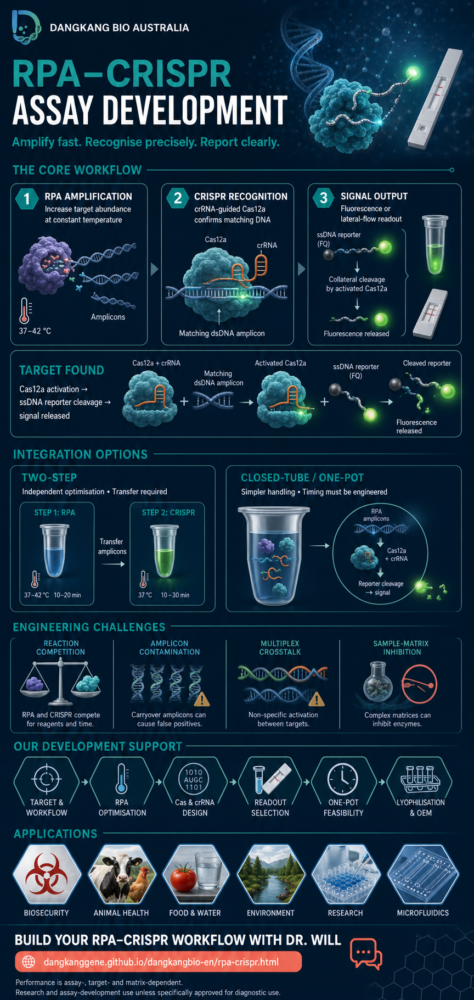

Prepare the sample
Release and, where required, purify target nucleic acid. Matrix quality can determine downstream performance.
RPA increases the amount of a selected nucleic-acid target at a constant temperature. A programmable CRISPR-Cas system then confirms the amplified sequence and converts recognition into a measurable signal.
Two biochemical functions are coupled, but each has a distinct job.
Release and, where required, purify target nucleic acid. Matrix quality can determine downstream performance.
Recombinase-assisted primer targeting and strand-displacing polymerase generate amplicons under low, constant-temperature conditions.
A crRNA guides Cas12a to complementary DNA. Cas13 systems instead recognise RNA and use an RNA reporter.
Target binding activates collateral reporter cleavage, enabling fluorescence or appropriately designed lateral-flow readouts.
Cas12a–crRNA binds a compatible double-stranded DNA target and cleaves that target. Sequence complementarity and PAM context contribute to recognition.
Target binding activates nonspecific cleavage of nearby single-stranded DNA reporters. Cas13 uses collateral RNA cleavage and an RNA reporter.
Separating a fluorophore from its quencher produces fluorescence. Reporter designs can also translate cleavage into a lateral-flow band pattern.
Integration design is a trade-off between biochemical control, operational simplicity and contamination management.
RPA is optimised first, then the amplicon is transferred to a CRISPR detection reaction.
Strength:Independent optimisation and often stronger signal.Constraint:Open-tube transfer raises aerosol-contamination risk.Amplification and detection chemistries share one closed device but remain physically separated until triggered.
Strength:Reduced amplicon handling.Constraint:Device manufacture and timed fluid control add complexity.RPA and CRISPR components react in the same solution, with kinetic, thermal, chemical or RNP controls used to manage timing.
Strength:Simple closed-tube workflow.Constraint:Premature Cas activity can consume amplification templates.High analytical potential does not remove the need for target-specific optimisation, controls and sample-to-answer validation.
In a homogeneous one-pot assay, early Cas activation can cleave templates or amplicons before RPA has accumulated sufficient product.
Two-step transfer can release concentrated amplicons. Unidirectional workflow, closed consumables and appropriate controls are important.
Primer competition, primer dimers and shared collateral-cleavage reporters can complicate target discrimination.
Fast lysis may leave inhibitors that affect RPA or Cas activity. Extraction requirements must be evaluated for each matrix.
Low, intermittent or spatially uneven target burden can produce negative results even when the analytical chemistry is sensitive.
Microfluidics and automated timing can improve containment, but introduce manufacturing, quality-control and scale-up requirements.
Coordinate reagents, enzymes, workflow design and manufacturer technical support through one Australian commercial contact.
Discuss your project with Dr. WillA concise visual overview of the core workflow, Cas12a reporter chemistry, integration options, engineering challenges, application areas and development support.
Open full-size poster
Foundational mechanisms and representative engineering studies. Performance values in individual papers are assay-specific.
The foundational description of recombinase-driven, low-temperature isothermal amplification.
PMID 16756388 ↗ Cas12a mechanism · ScienceEstablished target-activated collateral cleavage and the DETECTR concept.
PMID 29449511 ↗ Cas13 platform · ScienceIntroduced SHERLOCK and Cas13 collateral reporter cleavage for nucleic-acid detection.
PMID 28408723 ↗ One-pot engineering · Analytical ChemistryDirectly examines template loss from Cas cleavage and a formulation strategy to improve one-pot efficiency.
PMID 35635176 ↗ Multiplexing · CMBLA representative study of multiplex amplification and Cas12a signal conversion.
PMID 38459454 ↗ Multiplex recognition · Nature CommunicationsExplores split-crRNA engineering, multiplexing and RPA-coupled detection.
PMID 39333528 ↗ Integrated workflow · Biosensors & BioelectronicsA target-specific example of one-pot timing and reduced sample-preparation workflow.
PMID 39244837 ↗